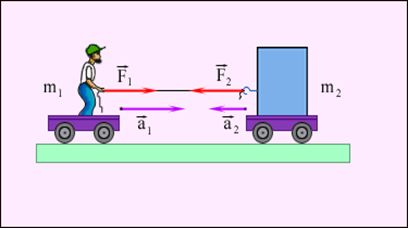

Механическое движение – это изменение положения тела в пространстве относительно других тел. Например, автомобиль движется по дороге. В автомобиле находятся люди. Люди движутся вместе с автомобилем по дороге.

Раздел механики, описывающий геометрические свойства движения без учёта причин, его вызывающих, называется кинематикой.
В более общем значении движением называется изменение состояния физической системы с течением времени. Например, можно говорить о движении волны в среде